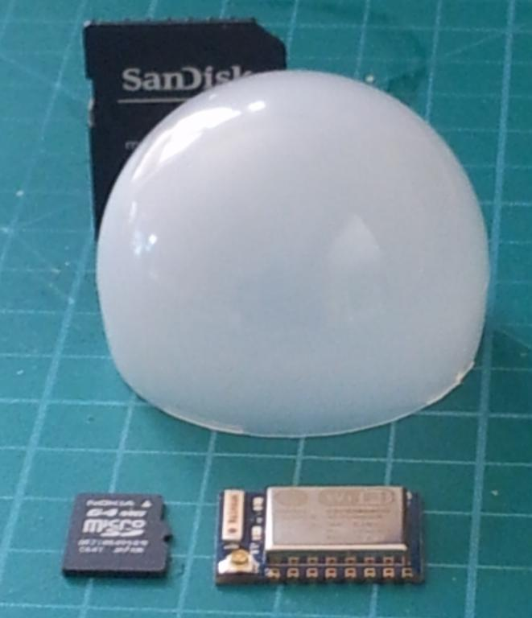

Just written a blog post on energy display options, I'm interested to hear what you think..
http://openenergymonitor.blogspot.co.uk/2015/03/energy-display-options.html

Archived Forum |
|
Blog post: Energy Display Options...Submitted by glyn.hudson on Thu, 19/03/2015 - 11:23Just written a blog post on energy display options, I'm interested to hear what you think.. http://openenergymonitor.blogspot.co.uk/2015/03/energy-display-options.html
» |
Re: Blog post: Energy Display Options...
I think is a shame you may be discontinuing the emonGLCD..
I know my parents have been waiting for the SMD version now for 6 months after their cat destroyed the old one. (fell off a window). They had the orginal 1.0 version and were looking to upgrade the whole lot to the newest for a plug in system.
They really like the fact the lights are green to show they are exporting and red for importing.. This way they can work out if they can run the washing machine etc..
I will have to look to see if i can repair the old one now.
Just my 2p worth.
Re: Blog post: Energy Display Options...
Sounds good to me - I think focusing on the Android app is the way to go...
I seem to have 3 android phones here which are waiting to get sold, but I don't expect to get more than £20 for them!
E-ink displays also sound great - the Nook Simpletouch was £29 from Blackwell's for ages, but now seem to be finally discontinued.
Tim.
Re: Blog post: Energy Display Options...
Yes I'd vote for the app side of life. I did have a modified emoncms web page that displayed quite nicely on an old HTC Desire (now dead) and that may be the way to go for a simple starter. Needs to strip out everything except the dashboard bits so it fills the screen. A simple starting point.
Is there a guide to the API? I tried to interface to it but the responses back simply did not make sense.
Re: Blog post: Energy Display Options...
Although I like the idea of a custom display the reality is I wouldn't move it around the house so it would become static and less used, plus my coffee table is already buckling under the weight of numerous remotes, gadgets, monitors, controllers, thermostat, mobiles and tablets.
I have a couple of unused kindle touch wifi's that are just crying out to be repurposed as emon display come heating controllers (one upstairs one downstairs) and so I would love to see the "app" side of things develop,
Paul
Re: Blog post: Energy Display Options...
As robw mentioned above, I too, have found the EGLCD to be a very quick and easy way (via the LEDs) to tell whether I'm importing or exporting energy, especially from a distance. It's also nice to be able to see the actual values without having to fire up a computer.
I don't own a cell-phone, so mobile operation isn't something I'd miss. However, hacking an old Nook, or tablet, into a display, now that sounds interesting.
Re: Blog post: Energy Display Options...
Hey Bill, the thought of a PV stand/charger on a window sill to charge the kindle had crossed my mind, could add a simple led array and esp8266 for a easy read "mood light" like glow maybe?
Re: Blog post: Energy Display Options...
Cool idea. What does the 8266 get used for?
(I looked it up, and see that it's a serial-to-wi-fi device)
Re: Blog post: Energy Display Options...
it's a self contained wifi/server/mcu with several gpio's although intended to be used with serial devices it has 2MB of flash so for something as trivial as fetching some numbers to control some leds could be totally self contained.
the same could be done with a rfm12 or 69 and a AVR etc if you have an rfm2pi already i guess. but since the esp8266 costs less than a rfm and is wifi I thought it might be better, It was an off the cuff comment I haven't checked gpio current handling specs etc
...introducing the "emonGlow" ???
Paul
edit - Just googled "esp8266 led control" and look who was top off the bunch
http://harizanov.com/2014/11/esp8266-powered-web-server-led-control-dht22-temperaturehumidity-sensor-reading/
haven't read it yet but notice it has a dht22.
Re: Blog post: Energy Display Options...
Martin's article links to this: www.esp8266.com/viewtopic.php?f=6&t=376
It's a web server in an 8266. Pretty slick!
Re: Blog post: Energy Display Options...
'emonGlow'....I like it! Yeah, I've heard of the esp8266. Seems pretty cool. From what I hear it's quite new and documentation is still a bit sketchy
Re: Blog post: Energy Display Options...
Bill, Paul,
You should also take a look at Pete Scargill's pages, he also has a board for an esp8266 with relays, similar to Martin Harizanov's board. http://tech.scargill.net/
They are both using MQTT on the esp8266 and node red to connect things.
Personally I want to connect a simple MCU board to a board I already have with the relays on, so keeping the two separate. I noticed Nathan Chantrell has published a neat board with PSU and bringing out all the I/O from an esp03 with a handy jumper select for the programming and run modes of the esp8266. See this link http://nathan.chantrell.net/20150314/esp8266-esp-03-dev-board/#more-4274
Ive ordered some to give these a try. Personally the esp03 has enough I/O for me. I think scargill and harizanov are using the esp12 packaging.
Interesting times - if only I had more time!!!
Edit - fixed link - BT
Re: Blog post: Energy Display Options...
The problem there is (if you are anything like me) given more time you would find even more projects you don't have time to do !!
I saw Pete Scargill's colour changing led-driver and thought that may be handy. The MQTT and nodered is definitely interesting for these devices but its not for everyone, I was actually thinking of something that maybe quick off the ground and simple to use/implement in an existing set up.
Once the code is in place the serial port can be accessed to set SSID, password, url, apikey and feed id(s) using AT commands via a normal FTDI programmer and the arduino IDE (among other methods) which most of us have.
I have a couple of run of the mill led bulbs to dissect for their innards ( yet another project )
and thought the diffuser would make a great housing for a few leds and a esp8266 but wonder how long a battery that small could last??

The bulb diffuser looks massive in that pic but it is shorter than the sd card behind it and about 45mm dia.
and a pic to compare the size with a arduino pro mini type device and rfm12
This is a esp-07 several gpio's and 1 adc, wifi ant on-board plus conn for extn ant, Not much bigger than an rfm let alone the pro-mini
An "emonGlow" isn't really (very high) on my wish list right now and it's early days as far as esp8266 documentation, libs and examples etc go so I'm inclined to let the more knowledgeable guys do some experimenting and come back to it another day.
Paul
Re: Blog post: Energy Display Options...
Did you also see Pete Scargill home automation post?
Re: Blog post: Energy Display Options...
Hmm, all I want to do is monitor my PV system. I don't have any real interest in home automation, etc. so Node Red would be overkill for what Paul is suggesting. BTW, Paul, I like the name emonGlow too!
I'm just spoiled on being able to tell with a quick glance whether I'm importing or exporting energy, and Paul's idea sounds fairly simple to implement.
Re: Blog post: Energy Display Options...
I did, there is alot of interesting stuff there. I think we will be seeing a lot more on this device very soon!
I only mentioned it here in passing as a possible base for a solution to the issue of no static visual indicator when using apps on devices rather than a emonGLCD.
At ~£5 a go you could have a esp8244 with a handful of leds in every room if you so desired, positioned anywhere the emitted light can be seen (but not the device).
Paul
Re: Blog post: Energy Display Options...
I wrote a simple android app to display my two IP camera feeds plus two widgets to display my current import and export via emoncms feeds:
Re: Blog post: Energy Display Options...
Personally, I do like the emonGLCD,
It taught me a lot, and now is slightly modified, into showing everything I need.
Generating, Consuming, Current Temperature, Import / Export, How much hot water is in the tank, and also the lights flash orange once a packet comes in showing that the battery is low in one of the sensors.
I, honestly would be sad to see it go, but do welcome the app side of things, as this too will be useful, but I currently do not have a device I could commit to just one purpose.
However, please leave the details of it accessible, if you need a mirror for space etc I am willing to donate this, as I think that this is a wonderful thing to have even if we have to buy the bits separately.
Jimmy
Re: Blog post: Energy Display Options...
The open hardware design files will always be accessible. The beauty of open source. Nothing truly dies :-)
Re: Blog post: Energy Display Options...
I'm new to Open Energy and had been working on the preparation of a project to use these modules, including the display. I have been involved in OpenSource, electronics and programming for many, many years.
I was looking at setting up a trial of 20 to 30 complete systems to monitor energy consumption and heating systems (oil, electric and heat pumps) via a small project for 2 to 3 years. However, the loss of the display module has put this project in serious unbalance, while in the final proposal stages.
Yes I can understand where you are going regarding everything is mobile. BUT if you want a fixed function display unit, Android (or any other mobile operating system) is not the way to go. Several of these systems would have been installed to users who should not and would not want this type of display unit. People fiddle and will find what is underneath. It is just not possible to lock these products down to be just an 'energy monitor display'. Some properties would not even have internet connection, so certainly no WiFi to run an Android display and I didn't really want the hassle of setting up a suitable access point. The plan was to collect the data from memory modules every few months.
Up until now, this system was perfectly suitable for standalone or IoT connected. Now it is not. I will have to procure my own parts and boards to get these display up and running. I was really hoping for a 'off the shelf' solution needing minor hardware changes and some additions to the software, which would have been injected back into the project. I just wanted a display, nothing else.
Shame, and I do understand your issues fully and the choices you are forced to make. But this has derailed my project at the moment.
Re: Blog post: Energy Display Options...
Some possible ideas:
. Use a bluetooth interface to communicate directly between the data collection devices and a tablet.
. Use "ad-hoc" wifi networking (no access point necessary)
. Configure a raspberry pi etc. as a wifi access point ( http://elinux.org/RPI-Wireless-Hotspot etc.)
. Choose a cheap tablet or phone which is supported by CyanogenMod (or Android Open Source Project etc.), and ship a cut-down Android distribution which can't be used for things other than Open Energy Monitor display (should deter 99% of fiddlers).
Re: Blog post: Energy Display Options...
TimSmall, I think you have missed the point a little.
All your solutions are valid, but I didn't want to vary from the original units. Deviating and using 'third party' units defeats the object and requires me to learn additional skills - like locking down Android. BT & Adhoc WiFi are possible, but are prone to the serious attenuation by damp random stone walls (prevalent here) and interference from existing systems on 2.4G. The standard frequencies used by the OEM are not quite so prone to signal reductions.
I just wanted to buy/build the bits, flash the code onto the units and away I go. Not having to tweak a tablet, find the required libraries, search the internet for weeks looking for all the lock-downs. The RPi is probably the closest, but there is still an OS in the way (same as Android). An OS just adds a totally unwanted layer of ridiculously complex interference in the way of doing anything. There is no need for an OS, I don't want an OS and why should I have to have an OS? The tasks at hand does not warrant the need for an OS, just the hardware, the processor and the dedicated code are all that is needed with respect to data logging and displaying some basic diagnostic status information.
Sledge hammer and nuts spring to mind, not to mention KISS.
But thank you for your offerings.
Re: Blog post: Energy Display Options...
I'm with you on the desirability for a simple display such as the emonGLCD. I understand the difficulties in procuring and assembling the kit of parts, but I'm not one of those people who might have a redundant unit that could be pressed into service. I recognise that there is some merit if you happen to have one, and the 'eye candy' aspect could appeal to some. However, a lot of people just want to know "Am I buying or selling electricity?". We really need both.
Re: Blog post: Energy Display Options...
Looks like I missed the boat on getting hold of the full GLCD kit - just went on to the shop after an absence of a year or so (lots of other distractions in life!) to check the price and couldn't find it so had a dig around :( Appreciate that the kit is a pain to assemble and that all the knowledge is openly available but it would be nice to be able to buy at least the PCB and display separately - I orginally bought just a EmonTX and GLCD PCB to have a play and finally decided that having an 'always on', one function display, was the way forward, for me (and my wife!) at least - currently I'm just using the Green/Red LEDs as an indicator of inport/export with the bare PCB. I have lots of old phones kicking around but the GLCD just seems more 'standalone' and much simpler to understand - I am only recently reviving my old C coding knowledge and this was a nice way to 'fiddle' with the Arduino without wanting to get too involved in the Pi or another OS. Shame really :(
Re: Blog post: Energy Display Options...
Using an Android device makes a lot of sense. I have a few older ones I keep around for testing apps on and for uses like this. So, you can either use your phone and have an app on it, or you can get an old Android (~$35) and use it as nothing other than the display.
Has anyone released an Android app? I have an Android app on the market for an unrelated purpose (storm chasing), but frankly I don't have the time to write a decent app for this, so I'm hoping some kind soul has done so.
As an aside, I just ordered my initial setup, and in that order, accepted by the site, is the GLCD kit. Am I missing something? They are charging me for it. I won't receive the order until it crawls its way from the UK to Arizona, though.
Re: Blog post: Energy Display Options...
Hi Meso,
Yes, we have stock of a limited number of emonGLCD kits in the shop:
http://shop.openenergymonitor.com/emonglcd-lcd-display-unit-kit/
Re: Blog post: Energy Display Options...
Yippee!
Re: Blog post: Energy Display Options...
I am looking at using the ESP8266 as my device of choice for simple sensor functionality. If I need more power/memory/gpios etc then there is always the Arduino Mini or other Arduinos if the requirements need it but I could easily see me deploying these little ESP8266 devices everywhere. They are pennies to buy, easy to program and are very capable as simple web server or client.
I haven't designed the system properly yet but I expect each ESP8266 will expose their sensor data as a simple web page, XML or JSON for other devices on the network to probe with a central system, probably on a Raspberry Pi (perhaps as an emonBase) pulling it all together and logging to emonCMS or to a local database.
As for display... I will be relying on a web based solution to expose the data so should be acceable from a phone, tablet or any PC on the network. I have a spare small PC screen so will probably use that at first in the lounge running a RPi. Alternatively there are many small LCD options available for the RPi.